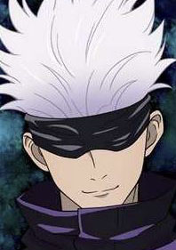
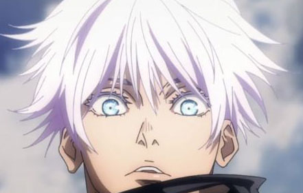

A special grade sorcerer.
He is a protagonist in the anime series Jujutsu Kaisen. As mentioned before, he is a special grade sorcerer, but he is also a teacher. Satoru is always seen wearing a black blindfold which is his signature look, but underneath the blindfold his eyes are blue with white eyelashes.
